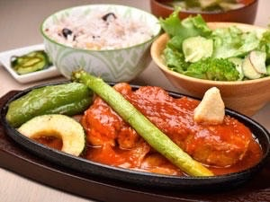
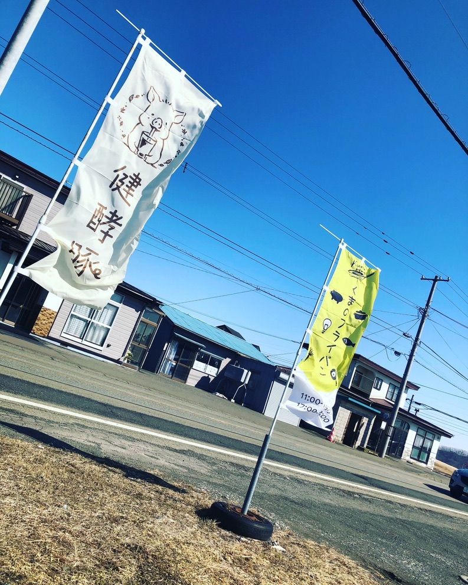
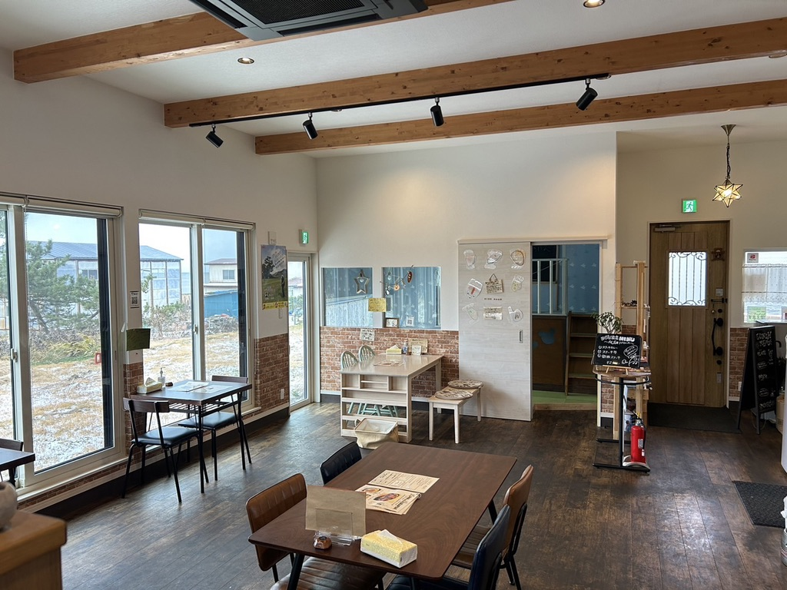
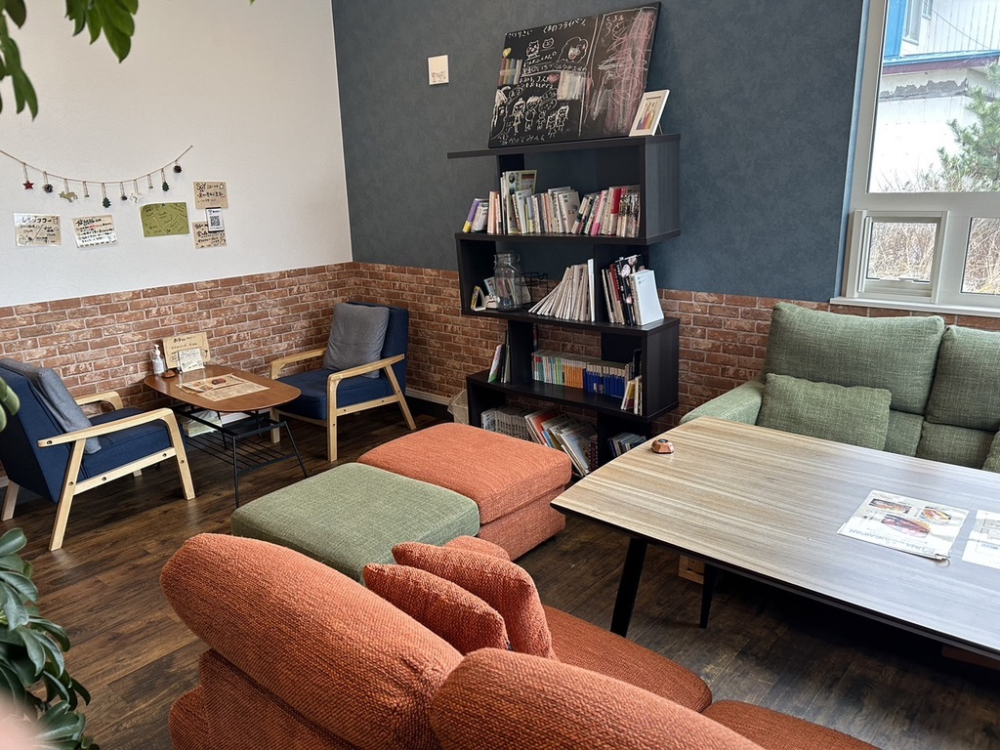
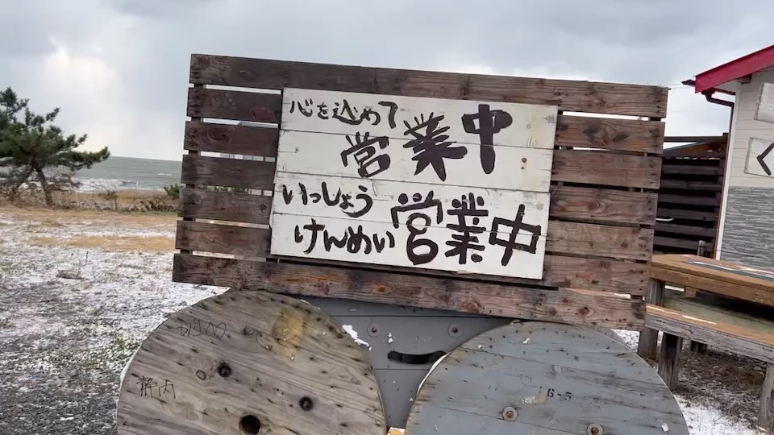

スパカツ
健酵豚ミートソース使用。サラダ付きで、チーズトッピングも楽しめます。
本日の目当て
店内から太平洋を一望でき、若い世代や家族でもゆっくり食事を楽しめる飲食店。キッズスペースやオリジナルメニューもあり、新ひだか町に来たら立ち寄りたい一軒です。
Signature

人気ナンバーワン
新ひだか町三石の猪野毛ファーム「健酵豚」を使い、低温調理でしっとり仕上げる厚切りの一皿。サラダ・ご飯・汁物付きで、満足感のある看板メニューです。
Hot Skillet
ソースがぐつぐつ煮立つ熱々の一皿。写真だけでは伝わりきらない、くまのフライパンらしい臨場感をそのまま届けます。
健酵豚ミートソース使用。サラダ付きで、チーズトッピングも楽しめます。

熱々鉄板の上にチーズとカツ。手作りトマトソースが美味しい、ごはん・サラダ付きのメインです。

健酵豚肩ロースを使った、にんにくの効いたご飯が進む一品。メガ追いニンニクもできます。
Kitchen
料理はもちろん、オリジナルブレンドのコーヒーや手作りのハンドメイド作品まで。食事、休憩、家族の時間を、三石らしいあたたかさで迎えます。


仕込み
低温調理した健酵豚を、注文の一皿に合わせて切り分けます。
盛り付け
素材の迫力と、飲食店らしいライブ感が伝わる厨房の風景です。


Inside
ソファ席や本棚のある落ち着いたスペース、家族連れでも使いやすいキッズスペースを用意。食事だけでなく、休憩や待ち合わせにも使いやすい空間です。



Event
店舗だけでなく、地域イベントにも精力的に出展。ポークチャップやスパカツなど、くまのフライパンらしい味を外へ届けながら、新ひだか町の魅力も一緒に発信しています。


Next Action

Access
新ひだか町三石鳧舞の、海の近くの飲食店。ランチ、ディナー、オードブル、弁当、宴会相談まで、用途に合わせて利用できます。